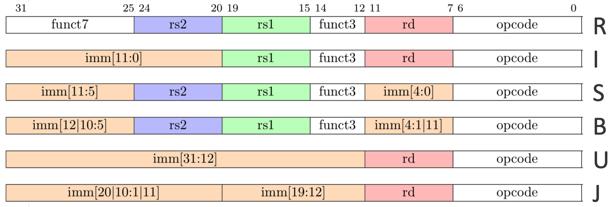
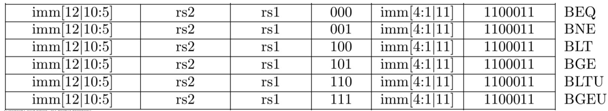

[RISC-V Architecture Training] Basics & Unprivileged Specification
RISC-V SPEC
https://riscv.org/specifications (official version v1.10)
https://github.com/riscv/riscv-isa-manual (source code)
User-level ISA (unpriviledged)
- All the basic instructions, and extensions
- Memory model
Priviledged ISA
- Priviledge level: M (machine), H (hypervisor), S (supervisor), U (user)
- CSR (control status register)
- Virtual-memory system
Debug & Trace
First impression: ISA subsets
RISC-V is a family of ISAs
Divided into several subsets: I, M, A, F, D, C, …
-
Domain-specific architecture (by David Patterson)
- The ending of Moore’s Law => domain-specific architecture is the future of computing
- Too costy to be “general purpose” anymore
- Too many new domains
- Not enough transistors or power to be general purpose
- E.g. TPU-like xPU for AI computing
-
RISC-V ISA’s approach
- Different domain-specific implementations can select subsets suitable for its own domain
- Only I (base) is mandatory
- Can be extensible in the future
.footnote[Ref: A Domain-Specific Architecture for Deep Neural Networks]
First impression: ISA subsets
My deepest impression of RISC-V ISA
- Extensible
- Hardware-friendly
Why RISC-V ISA is highly extensible?
Instruction space is divided into 3 disjoint categories
- Standard: defined with specification
- Reserved: for future extensions
- Custom: implementation can have its own custom instructions
Standard subsets as of now
I: base integer computational instructions, integer load/store, control-flowM: integer multiplication and division extensionA: atomic instruction extension, for inter-process synchronizationF/D: single/double-precision floating-point extensionC: 16-bit compressed instruction extension (higher code density)
IMAFD=G, soRV64GC=RV64IMAFDC
RISC-V’s approach of extension
Extension
Keep the base the same, while add new extensions over time
Reserved
Add extension very carefully, sometimes seems too slow
Custom
Keep custom instruction category open, and the software flow to add custom instruction easy
32-bit or 64-bit?
Exclusive 32-bit and 64-bit ISA
- Explicitly separate 32-bit and 64-bit ISA
- Unlike ARMv8-A which has AArch32 and AArch64 both compatible
- For hardware simplicity
- Optimize for its needs without requiring to support all the operations needed for other base ISA
- But introduced some confusion
- In 32-bit version,
ADDmeans 32-bit add, but in 64-bit the same instruction means 64-bit add - And 64-bit version has
ADDWthat support 32-bit operations
- In 32-bit version,
Instruction length is orthogonal
- 32-bit for normal instructions
- 16-bit for compressed extension
- 48-bit or even longer reserved for future
RISC-V Terminology
Hart = hardware thread
Hart is a very important concept in RISC-V
- One RISC-V core might contain multiple harts (hardware threads) to support multithreading
- All ISA concepts are based on hart
- Each hart has its own PC, GPR, CSR, interrupt, exception, and etc.
- But they may share the same front-end (instruction fetch and decoding), or shared ALU, LSU or accelerators
RISC-V Terminology
Memory
-
Size unit
- Word = 32-bit
- Halfword = 16-bit
- Doubleword = 64-bit
- Quadword = 128-bit
-
Implicit and explicit access
- Implicit memory access = instruction fetch
- Explicit memory access = load/store
- Memory access ordering between implicit and explicit access:
FENCE.I- E.g. self-modified code
-
Weak Memory Ordering (RVWMO)
- This is the weakest model allowed
- Implementation can adopt stronger model of Total Store Ordering
-
Little-endian
- Hardware-friendly
- Fixed, not configurable like MIPS
RISC-V Terminology
Exceptions, traps and interrupts
- Exception: unusual conditions happened in current RISC-V hart
- E.g. illegal instructions, divide by zero, page fault
- Precise exception
- All instruction before the exception has to commit
- All instruction after the exception cannot commit
- Interrupt: external asynchronous event asking for RISC-V hart’s attention
- E.g. DMA is done, keyboard input
- Interrupt doesn’t need to be precise
- Trap: the transfer of control to a trap handler caused by exception or interrupt
- Contained trap: to higher privilege mode, e.g.
ECALL - Requested trap: the same privilege mode, e.g. system call
- Invisible trap: transparent to software, e.g. page fault
- Fatal trap: fatal failure, and causes the execution terminate, e.g. watchdog timer timeout
- Contained trap: to higher privilege mode, e.g.
[Tips] How to download and compile latest ISA SPEC
git clone https://github.com/riscv/riscv-isa-manual.git
cd riscv-isa-manual
git tag -l
git checkout draft-20190521-21c6a14 # select the latest tag
make
Pre-requisition: install LaTeX in Ubuntu
apt-get install texlive-full
RV32I: base integer instruction set
Let’s start from the base, and talk about extensions later.
RV32I / GPR (general purpose registers)
- 32 GPR: x0 to x31
- X0 is hardwared to 0
- Very useful
NOPis implemented asADDI x0, x0, 0
- Very useful
- GPR + PC = architectural state
- Width: depends on 32-bit or 64-bit system
XLENrepresents data width- E.g. 32-bit system
XLEN=32
- E.g. 32-bit system
.footnote[Correspondingly, ILEN represents instruction width. Currently, only ILEN=32 and ILEN=16 are defined.]
RV32I / instruction formats
ILEN = 32instruction width = 32-bit- 4 base formats + 2 immediate-encoding variants
- Very hardware friendly
- Register specifier always in the same place
opcodeare always in the same place- Also considered instruction frequency (more common, simpler opcode)
funct3/funct7are in the same place- Immediate is encoded considering hardware muxing overhead
.center[]
RV32I / arithmetic and logical operations
- Add, sub, and, or, shift, comparison
- No conditional operation, no implicit flag registers
- Comparison always write to
rd, next instruction check its value and decide what do next - Worse code density, but much easier hardware design
- Comparison always write to
.center[ ]
]
RV32I / memory access instruction
-
Load:
rd := @(rs1 + imm) -
Store:
@(rs1 + imm) := rs2 -
Sign extension when load
- By default, extend sign bit to
XLEN U(unsigned), so do zero-extend
- By default, extend sign bit to
-
Byte selection
B= byte = 8-bitH= halfword = 16-bitW= word = 32-bitD= double-word = 64-bit .center[]
RV32I / memory access instruction
Misalignment
- E.g. if
LDdoesn’t align to 64-bit boundary, it’s a misalignment - Whether misalignment will trigger an exception, it depends on the implementation
- To simplify hardware design
- Also support special application, like SIMD
RV32I / addressing
- Absolute address:
LUI(load upper immediate)
lui t0, 0x12345 # t0 = 0x12345000
lw t0, 0x678(t0) # t0 = MEM_READ(0x12345678)
- PC-relative address:
AUIPC(add upper immediate to PC)
auipc t0, 0x12345 # t0 = PC + 0x12345000
lw t0, 0x678(t0) # t0 = MEM_READ(0x12345678)
.center[ ]
]
Most of the time we use
AUIPCbecause the program should be able to load to any address base, and addressing inside is relative toPC.
RV32I / jump (unconditional)
JAL(jump and link): use immediate number as jump offset (+/1 1MiB)rd := PC + 4; PC := PC + imm- Function call:
rd = x1 = ra
JALR(jump and link register): use register and immediate number as jump target addressrd := PC + 4; PC := rs1 + imm- Return from a function call:
rd = x0, rs1 = x1 - Indirect call:
rd = x1 = rato further away address
.center[]
RV32I / branch (conditional)
- Compare
rs1andrs2- if true,
PC := PC + imm - else
PC := PC + 4
- if true,
EQ: equal;NE: non-equalLT: less than;GE: greater thanU: unsigned comparison
.center[]
RV32I / fence
FENCE: for memory ordering- Guarantee all memory access before this instruction has already been committed to its destination.
- E.g. write data structure to external DRAM, then notify PCI-Express DMA to send it out through its link
- Guarantee all memory access before this instruction has already been committed to its destination.
FENCE.I: for self-modifying code- Force all memory write to commit first, then invalidate all the I-Cache entries, before resume instruction fetch.
- Will be discussed in later session regarding to “Memory Model”
.center[]
RV32I / CSR access
CSRRW: read/write CSR, exchangers1andrdCSRRS: read then set bits, users1as bit mask, old value written intordCSRRC: read then clear bits, users1as bit mask, old value written in tordCSRRWI/CSRRSI/CSRRCI: meaning are the same, just use immediate as bit mask- Notice: all CSR access instruction is atomic instruction, which means it will happen in one cycle
.center[]
RV32I / system call and breakpoints
-
ECALL: trap into system call in higher privilege mode, raise environment call exception- Normally the arguments are passed with memory, pointer is saved in
mscratchregister
- Normally the arguments are passed with memory, pointer is saved in
-
EBREAKPOINT: trap into debug mode, raise breakpoint exception -
More details in later session regarding to “system call” and “debug mode”
.center[ ]
]
That’s it!
RV32I is a complete instruction set
Variants
Data width variants
- RV64I: 64-bit data/address variant
XLEN = 64general purpose registersD(double-word) load/store- E.g.
LD a0, 0(sp)
- E.g.
W(word) arithmetic instructions that works on lower 32-bit of the registers- E.g.
ADDIW a1, a0, 1
- E.g.
- RV128I: 128-bit data/address variant
Because they are exclusive instruction sets, need to change compiler
Variants
Instruction length variants (as ISA extension)
- RV32C (compressed): 16-bit instruction extension
- Future: SIMD, …
.center[ ]
]
Variants
ISA extensions
M: integer multiplication and divisionA: atomic instructionF: single-precision floating-pointD: double-precision floating-pointC: compressed instruction
These are the most used ISA extensions. IMAFD = G
Other popular working-in-progress extensions
N: user-level interruptsV: vector operationsP: packed-SIMD instructions- …
RV32M: multiply & divide
| Instruction | Meaning |
|---|---|
mul |
Multiplication, store low 32-bit to rd |
mulh |
Signed multiplication, store high 32-bit to rd |
mulhu |
Unsigned multiplication, store high 32-bit to rd |
mulhsu |
Signed x unsigned, store high 32-bit to rd |
div / divu |
rd = rs1 / rs2 |
rem / remu |
rd = rs1 % rs2 |
- Separate instruction to get higher and lower parts of multiplication result. But if do
mulh*followed bymuldirectly, hardware does not need to redo the multiplication again. - The same thing applies to division results also.
RV32A: atomic memory operation
- Atomic memory operation = read-modify-write
- In RISC-V, it support 2 types of atomic operation model
- Read-modify-write instruction
- Load-reserve / store-conditional
AMO (read-modify-write)
- Directly send
amo*instructions down to the memory hierarchy- Easy and intuitive
- Needs both network fabric and target memory hierarchy support atomic memory operation
- Cannot do too complicated operations
LR/SC (load-reserve / store-conditional)
- Split read-modify-write into 3 steps
- Load data and acquire reservation on target address
- Compute new value
- Store new value, only if reservation still held
- Store may fail, when reservation is not acquired or not kept, so it will need retry
- Example: use LR/SC to decrement a variable until it’s zero
retry:
lr.w t0, (a0)
beqz t0, done
addi t0, t0, -1
sc.w t1, t0, (a0)
bnez t1, retry
done:
- Pros: easy to implement, can support complicated operations; cons: low performance
RV32E: embedded extension
- Reduce 32 GPRs to 16 GPRs
- For a super small implementation, 32 GPRs can take up 25% area
Rarely see any implementaions
Floating-point extensions
F/DextensionsF= single-precision floating-pointD= double-precision floating-point
- Floating-point specific registers: f0 - f15
- If only support F, register width is 32-bit.
FLEN = 32 - If support both F & D, all registers are 64-bit.
FLEN = 64
- If only support F, register width is 32-bit.
- Floating-point CSR:
fcsr = {frm, fflags}- Rounding mode register (dynamic)
- Aggregated exception flags
Floating-point / load & store instructions
- Same instruction format as integer load/store
| Instruction | Meaning |
|---|---|
flw frd, imm(rs1) & fld frd, imm(rs1) |
Load single/double-precision floating-point from address imm(rs1) into frd |
fsw frs2, imm(rs1) & fsd frs2, imm(rs1) |
Store single/double-precision floating-point from frs2to address imm(rs1) |
.footnote[f* = float-poing register, e.g. frd is floating-point destination register]
Floating-point / conversion instructions
- Rounding mode
- Static rounding mode: defined in instruction
RMfield - Dynamic rounding mode: instruction
RMfield isDYNthen usefrm(rounding mode register)
- Static rounding mode: defined in instruction
- Instructions
FCVT.*.*: convert between floating-point registers and GPR (as integer value)FMV.*.*: directly move between floating-point registers and GPRFSGNJ: sign-injection provides ABS and NEG operation on floating-point
Floating-point / arithmetic instructions
- Floating-point exception
- Will no generate trap on IEEE-754 exceptions. Need to read
fflagsfields infcsr - No NaN-payload propagation (NaN = not a number)
- Exception flag in
fcsr
- Will no generate trap on IEEE-754 exceptions. Need to read

Floating-point / arithmetic instructions
- Floating-point arithmetic operation examples
- MAC: multiplication and accumulation (in GCC, it’s called FMA, fused multiplication/addition)

Floating-point / classification instructions
FCLASS
Floating-point / implementations
Hardware implementation: Berkeley HardFloat
- Written in Chisel
- https://github.com/ucb-bar/berkeley-hardfloat
Berkeley SoftFloat
- Conforms to IEEE standard
- Used in SPIKE simulator, and HardFloat’s test suite as golden standard
- http://www.jhauser.us/arithmetic/SoftFloat.html
R32C: compressed instruction extension
Requirements from the market: code density
- Code density means less on-chip memory
- Super important for embedded systems
- Higher code density means lower I-Cache miss rate and lower instruction fetch power
16-bit instruction
32-bit instruction encoding is not very dense, so reduce it to 16-bit
- ARM has Thumb-2
- RISC-V has C-extension
RV32C / how?
Observations
- A handful of opcodes are very popular
addi&lw&swconsist more than 50% of the instructions
- GPR access locality: 2/3 of the time are referring to 1/4 of the registers
Ideas
- Use 16-bit representation of most popular instructions
- Limit register access to only x8-x15 to reduce register index size
RV32C / one big issue
Comparing to Thumb-2
- No
ldm(load-multiple) /stm(store-multiple)- Use shared prologue/epilogue. More used, more code saved.
__riscv_save_1: # shared prologue
addi sp,sp,-16
sw s0,8(sp)
sw ra,12(sp)
jr t0
__riscv_restore_1: # shared epilogue
lw s0,8(sp)
lw ra,12(sp)
addi sp,sp,16
ret
function:
jal t0,__riscv_save_1
# ...
jal x0,__riscv_restore_1
Personal experience: not very well supported by GCC compiler
RV32C / result
Benchmark: SPEC CPU2006
Personal experience: Thumb-2 (ADS) is currently 20% smaller than RV32C (GCC). In the compiler territory, RISC-V still have a long way to improve.
.footnote[the benchmark should use CoreMark, which is specially design for embedded process use case]
Other popular extension
“V”: vector operations
- Popular because of AI applications
- Difficult because of compiler
- How to vectorize for loops
- Current solution is LLVM
- Current version 0.7
- https://github.com/riscv/riscv-v-spec
“B”: bit manipulation
- Useful for specific domains such as communication that need to deal with packed data structures
- Current version 0.0
- https://github.com/riscv/riscv-bitmanip
“P”: packed-SIMD fixed-point operations
- Parallelize fixed-point operations
- Current version 0.2
Summary
.row[
Extensible
- Base + extensions
- Custom instruction
- Domain-specific arch
- Still growing fast
Hardware-friendly
- Simple instruction set
- Designed to make hardware simple
- Micro-architecture freedom
- Compiler still have room to improve
.row[
It’s a good time to start learning about RISC-V!
- Still simple enough to start with
- More committment from big players